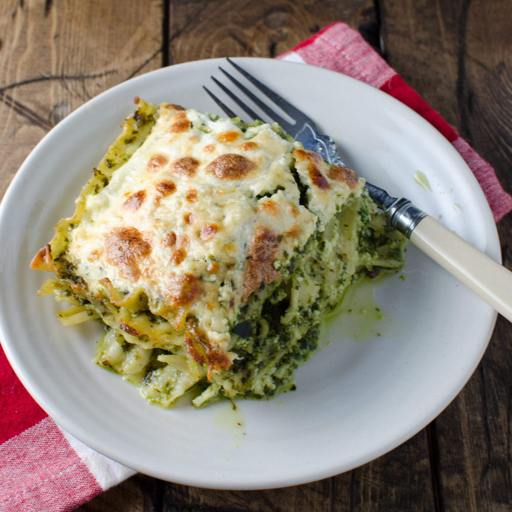

Lasagna Recipe

Description
The dish we call lasagna has been called, for most of its existence, and in most parts of the world, lasagne. Lasagna is singular, and lasagne is plural. The exact etymology of the word is unclear, but it has referred to a wide sheet of pasta that is placed in a pot with food served on top of it for a very long time. The first reference to it in the Oxford English Dictionary is from the 18th Century, and that’s just to its appearance in print in English. There are references to words very similar to lasagne in Greek and Latin, as a scholarly article describes here.
English poet Robert Browning wrote about the dish in “The Englishman In Italy” in 1844:
“We shall feast our grape-gleaners (two dozen, Three over one plate) With lasagne so tempting to swallow In slippery ropes,”
Ingredients
- 12 lasagna noodles uncooked
- 4 cups mozzarella cheese shredded and divided
- ½ cup parmesan cheese shredded and divided
- ½ pound lean ground beef
- ½ pound Italian sausage
- 1 onion diced
- 2 cloves garlic minced
- 36 ounces pasta sauce
- 2 tablespoons tomato paste
- 1 teaspoon italian seasoning
- 2 cups ricotta cheese
- 1/4 cup fresh parsley chopped
- 1 egg beaten
Instructions
- Heat oven to 350°F. Cook pasta al dente according to package directions. Rinse under cold water and set aside.
- Brown beef, sausage, onion and garlic over medium high heat until no pink remains. Drain any fat.
- Stir in pasta sauce, tomato paste, Italian seasoning. Simmer 5 minutes.
- Make Cheese Mixture by combining 1 ½ cups mozzarella, ¼ cup parmesan cheese, ricotta, parsley, and egg.
- Add 1 cup meat sauce to a 9x13 pan.
Top with 3 lasagna noodles. Layer with ⅓ of the Cheese Mixture and 1 cup of meat sauce.
Repeat twice more.
Finish with 3 noodles topped with remaining sauce.
- Cover with foil and bake 45 minutes.
- Uncover, sprinkle with remaining cheese (2 ½ cups mozzarella cheese and ¼ cup parmesan), and bake an additional 15 minutes or until browned and bubbly. Broil 2-3 minutes if desired.
- Rest 10-15 minutes before cutting.